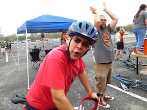

Hi there! Welcome to my personal GitHub page! If there was one word that best describes who I am, it would be curious. I am like a cat, always wanting to look at what's in that shoe box, and trying to understand how the world works.
That being said, I think no word can encapsulate all the particularities of our personalities and no word can sum up the experiences of our lives. I am no different. I'm an engineer by training with a soft spot for visual arts. I think I’m an introvert, but my co-workers would say I’m extroverted. And even with traditional degrees from well established public and private universities, I am still learning from non-traditional schooling (coding bootcamps) and from the people around me. Nonetheless, here’s an inkling of who I am…
|

Me enjoying two of my favorite activities: biking and beer! (Beer Bike 2013) |
I am originally from Houston, TX, fully born and raised in the great state of Texas. My family however is from Monterrey, Nuevo Leon, Mexico (somos Norteños). After graduating Rice University, I moved to the Pacific Northwest in 2011 to work for the Boeing Company as an aerospace structural engineer.
Me trying out Google Glass back in 2014. I love keeping up with technology trends!
After six years working in aerospace, I was laid off from Boeing in June 2017. Although initially it sucked, it did give me the motivation to try something different. That something different was in the tech field—I always liked keeping up with the latest trends in tech, and the idea of working for a tech company always appealed to me. So here I am, learning how to write code with Dev Bootcamp! As of July 2017, I am just starting out, but I am excited about the possibilities.
Check back to see my progress as a coder. Hopefully you will see some progress!